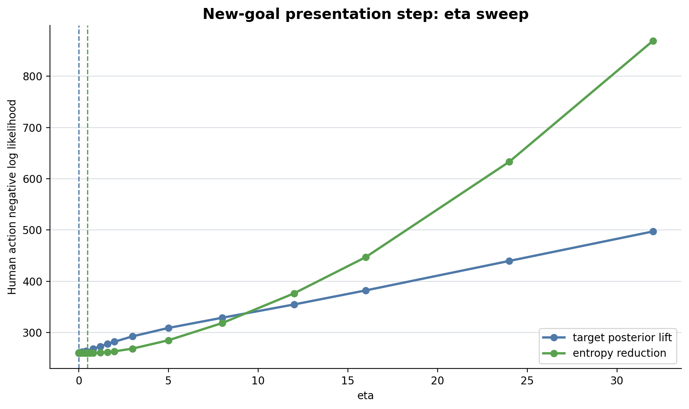
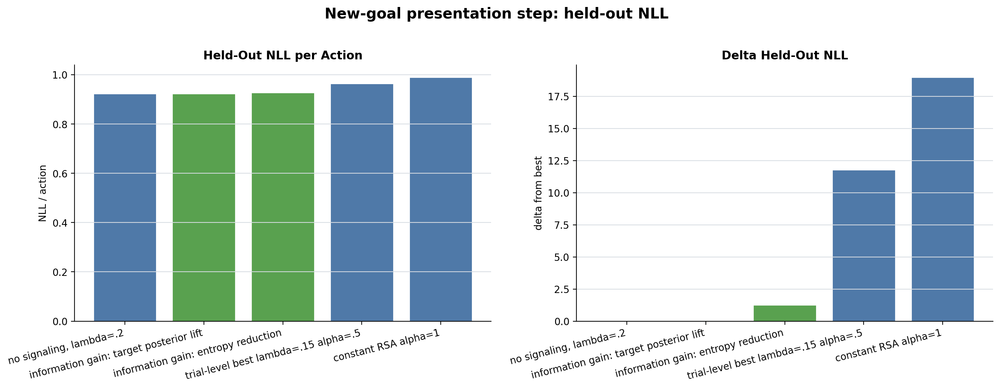
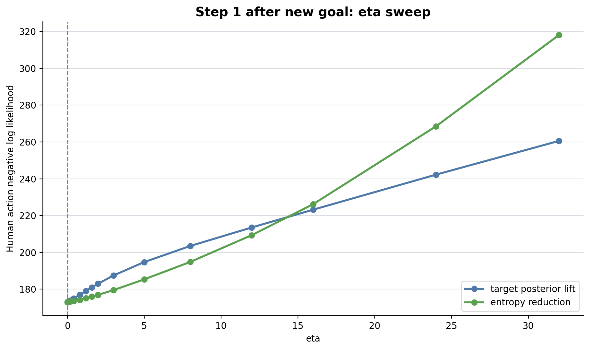
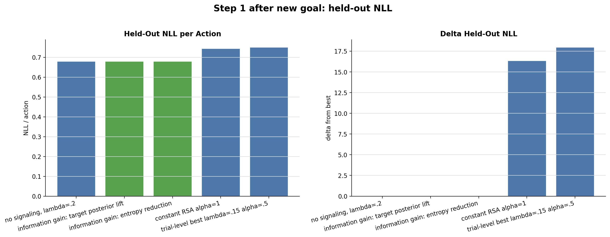
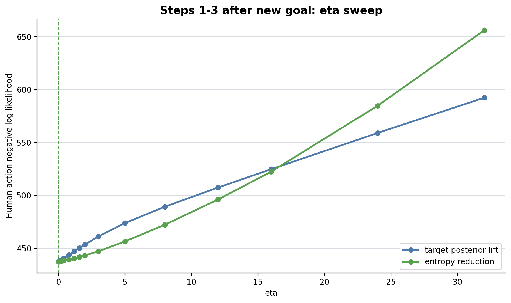
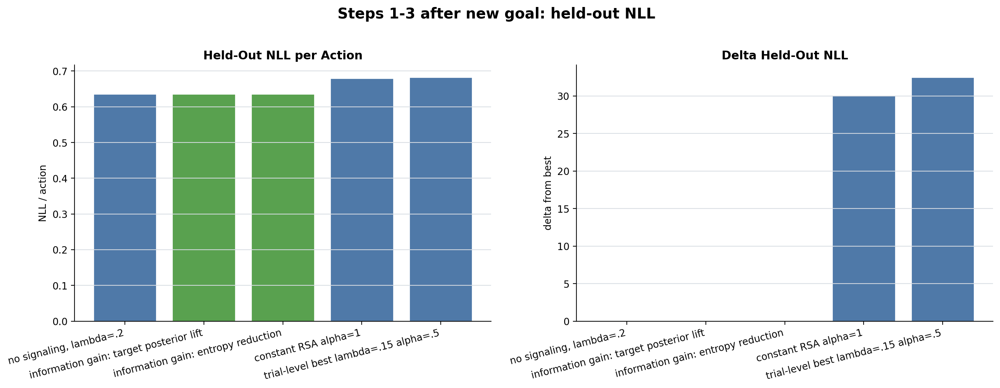

Model
Primary variant is target posterior lift: S(a,g)=log P(g|a)-log P(g). The sanity-check variant is entropy reduction: S(a)=H(P)-H(P|a).
pi(a|g,s,P) proportional to pi_base(a|s,g) exp(eta U(P) S(a,g))
New-goal presentation step
Actions=282; mean normalized posterior entropy=0.594. Fixed lambda=0.2; only eta is fitted.


| model | variant | eta | lambda | n_params | actions | in_sample_nll | heldout_nll | heldout_nll_per_action | delta_heldout_nll | aic | bic |
|---|---|---|---|---|---|---|---|---|---|---|---|
| no signaling, lambda=.2 | none | 0.20 | 0 | 282 | 260.273 | 260.273 | 0.923 | 0.000 | 520.55 | 520.55 | |
| information gain: target posterior lift | posterior_lift | 0.00 | 0.20 | 1 | 282 | 260.273 | 260.273 | 0.923 | 0.000 | 522.55 | 526.19 |
| information gain: entropy reduction | entropy_reduction | 0.50 | 0.20 | 1 | 282 | 259.949 | 261.526 | 0.927 | 1.254 | 521.90 | 525.54 |
| trial-level best lambda=.15 alpha=.5 | rsa | 0.50 | 0.15 | 0 | 282 | 272.052 | 272.052 | 0.965 | 11.779 | 544.10 | 544.10 |
| constant RSA alpha=1 | rsa | 1.00 | 0.20 | 0 | 282 | 279.268 | 279.268 | 0.990 | 18.996 | 558.54 | 558.54 |
Step 1 after new goal
Actions=254; mean normalized posterior entropy=0.172. Fixed lambda=0.2; only eta is fitted.


| model | variant | eta | lambda | n_params | actions | in_sample_nll | heldout_nll | heldout_nll_per_action | delta_heldout_nll | aic | bic |
|---|---|---|---|---|---|---|---|---|---|---|---|
| no signaling, lambda=.2 | none | 0.20 | 0 | 254 | 172.995 | 172.995 | 0.681 | 0.000 | 345.99 | 345.99 | |
| information gain: target posterior lift | posterior_lift | 0.00 | 0.20 | 1 | 254 | 172.995 | 172.995 | 0.681 | 0.000 | 347.99 | 351.53 |
| information gain: entropy reduction | entropy_reduction | 0.00 | 0.20 | 1 | 254 | 172.995 | 172.995 | 0.681 | 0.000 | 347.99 | 351.53 |
| constant RSA alpha=1 | rsa | 1.00 | 0.20 | 0 | 254 | 189.350 | 189.350 | 0.745 | 16.354 | 378.70 | 378.70 |
| trial-level best lambda=.15 alpha=.5 | rsa | 0.50 | 0.15 | 0 | 254 | 190.991 | 190.991 | 0.752 | 17.995 | 381.98 | 381.98 |
Steps 1-3 after new goal
Actions=688; mean normalized posterior entropy=0.105. Fixed lambda=0.2; only eta is fitted.


| model | variant | eta | lambda | n_params | actions | in_sample_nll | heldout_nll | heldout_nll_per_action | delta_heldout_nll | aic | bic |
|---|---|---|---|---|---|---|---|---|---|---|---|
| no signaling, lambda=.2 | none | 0.20 | 0 | 688 | 437.438 | 437.438 | 0.636 | 0.000 | 874.88 | 874.88 | |
| information gain: target posterior lift | posterior_lift | 0.00 | 0.20 | 1 | 688 | 437.438 | 437.438 | 0.636 | 0.000 | 876.88 | 881.41 |
| information gain: entropy reduction | entropy_reduction | 0.00 | 0.20 | 1 | 688 | 437.438 | 437.438 | 0.636 | 0.000 | 876.88 | 881.41 |
| constant RSA alpha=1 | rsa | 1.00 | 0.20 | 0 | 688 | 467.448 | 467.448 | 0.679 | 30.010 | 934.90 | 934.90 |
| trial-level best lambda=.15 alpha=.5 | rsa | 0.50 | 0.15 | 0 | 688 | 469.945 | 469.945 | 0.683 | 32.507 | 939.89 | 939.89 |